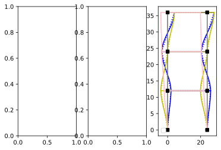

Modal analysis - 1r
import ema as emimport matplotlib.pyplot as pltimport numpy as np% config InlineBackend.figure_format = 'svg' = em.rModel(2 ,3 )= mdl.dnodes= mdl.delems= 24 = 12 1 ,w), (3 ,h))for node in n.values():'rz' )'4' ].mass = 1 '6' ].mass = 1 '8' ].mass = 0.5 '1' ], ['x' , 'y' ])'2' ], ['x' , 'y' ])= [[10 , 11 , 12 ], [13 , 14 , 15 ], 1 , 11 , 4 ], [ 1 , 14 , 5 ], 2 , 11 , 6 ], [ 2 , 14 , 7 ], 3 , 11 , 8 ], [ 3 , 14 , 9 ]]Part a)
= em.K_matrix(mdl)= em.Mass_matrix(mdl)* h** 3
0
1
2
0
48.0
-24.0
0.0
1
-24.0
48.0
-24.0
2
0.0
-24.0
24.0
$u_{{1}}$
$u_{{2}}$
$u_{{3}}$
$u_{{1}}$
1.0
0.0
0.0
$u_{{2}}$
0.0
1.0
0.0
$u_{{3}}$
0.0
0.0
0.5
Part b)
= em.analysis.ModalAnalysis(mdl)(array([0.05183404+0.j, 0.02777778+0.j, 0.00372152+0.j]),
array([[ 4.08248290e-01, -8.16496581e-01, -4.08248290e-01],
[-7.07106781e-01, -3.10316769e-16, -7.07106781e-01],
[ 8.16496581e-01, 8.16496581e-01, -8.16496581e-01]]))= em.U_vector(em.A_matrix(mdl))= ['b' , 'y' ,'pink' ]= plt.subplots(1 ,3 )for i, shape in enumerate (shapes[1 ].T):0 :3 ] = shape= colors[i], label= str (i+ 1 )); No handles with labels found to put in legend.
svg
Part c) Verify orthogonality
= np.around(shapes[1 ], 7 )array([[ 0.4082483, -0.8164966, -0.4082483],
[-0.7071068, -0. , -0.7071068],
[ 0.8164966, 0.8164966, -0.8164966]])print (phis[:,0 ] @ M.f @ phis[:,1 ])0.0print (phis[:,0 ] @ M.f @ phis[:,2 ])3.2475700462164525e-09print (phis[:,1 ] @ M.f @ phis[:,2 ])0.0Part d) Normalize modes.
Each mode shape is normalized so that when multiplied by the problem variable, \(\frac{1}{\sqrt{m}}\) , they will generate a modal mass matrix, \(M_n\) , equal to the identity matrix.
= np.zeros((3 ,3 ))0 ] = phis[:,0 ]/ ((phis[:,0 ] @ M.f @ phis[:,0 ]))** (1 / 2 )print (phi_n[:,0 ])0 ].T @ M.f @ phi_n[:,0 ][ 0.40824829 -0.70710678 0.81649658]
C:\Users\claud\Anaconda3\lib\site-packages\IPython\core\formatters.py:371: FormatterWarning: text/html formatter returned invalid type <class 'ema.utilities.Structural_Vector'> (expected <class 'str'>) for object: Structural_Vector(1.)
FormatterWarning
Structural_Vector(1.)1 ] = phis[:,1 ]/ ((phis[:,1 ] @ M.f @ phis[:,1 ]))** (1 / 2 )print (phi_n[:,1 ])1 ].T @ M.f @ phi_n[:,1 ][-0.81649658 -0. 0.81649658]
Structural_Vector(1.)2 ] = phis[:,2 ]/ ((phis[:,2 ] @ M.f @ phis[:,2 ]))** (1 / 2 )print (phi_n[:,2 ])2 ].T @ M.f @ phi_n[:,2 ][-0.40824829 -0.70710678 -0.81649658]
Structural_Vector(1.)= np.around(phi_n.T @ M.f @ phi_n,7 )array([[ 1., 0., 0.],
[ 0., 1., -0.],
[ 0., -0., 1.]])